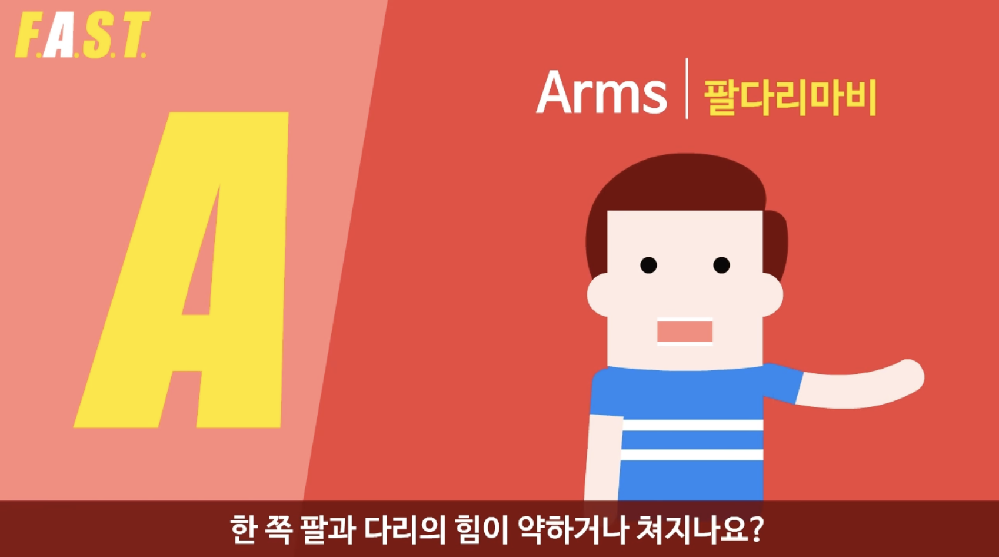
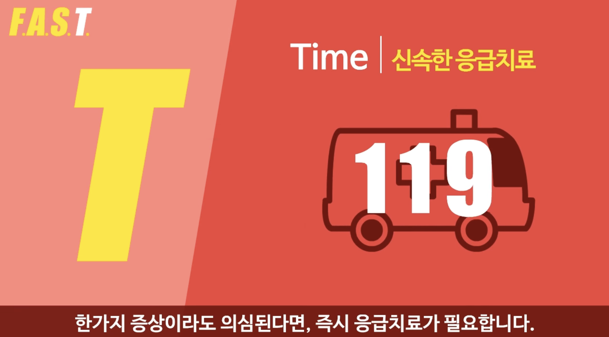

{{ name }}님의 뇌졸중 전조증상 검사 결과
지금 당장은 문제가 없을 수 있습니다. 그러나...
본 서비스는 100% 정확한 자가진단에 목표를 둔 것이 아닌, 뇌졸중의 증상과 위험성에 대한 인지 전파를 위해 고안되었습니다.
완벽한 자가진단이란 존재하지 않으며, 증상에 따른 정확한 진단은 꼭 의사의 진료를 통해 받아주시기 바랍니다. (필요시 상단 자가진단 영상자료 사용)
의심 증상이 있다면 시급히 119에 연락하여 도움을 요청하거나 응급실에 내원하시기 바랍니다.
뇌졸중에 의한 사망률은 증상 발생 후 조기 치료 여부에 의해 영향을 크게 받으며,
뇌졸중 환자 중 3시간 이내에 병원에 도착하지 못하여 이에 따른 적절한 치료를 받지 못하고 있는 경우는 70% 이상인 것으로 알려져 있습니다.
제한된 시간 내에 적절한 치료를 제공 하기 위해서는 치료 가능 시간대에 병원에 도착 할 수 있어야 합니다.
이를 위해서는 평소 뇌졸중 증상의 조기 인식, 신속한 병원 이송과 같은 병원 전 단계의 시간을 단축시키는 것이 중요합니다.
FAST - 뇌졸중 증상 자가 진단
Face | 얼굴마비
Arms | 팔다리마비

Speech | 언어장애
Time | 응급치료
